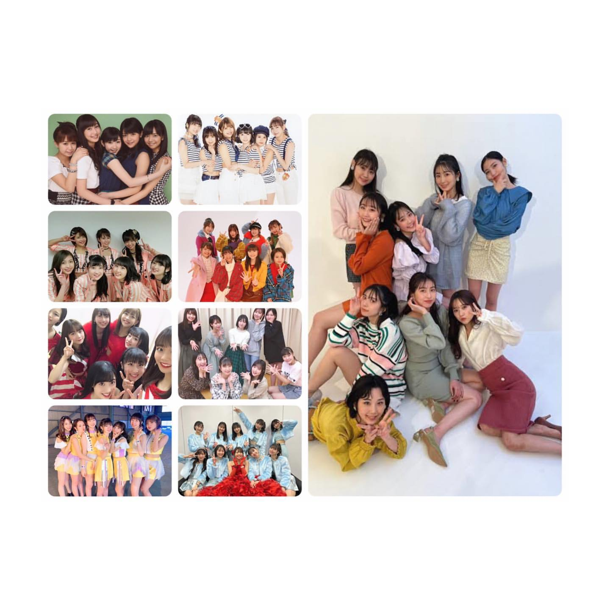
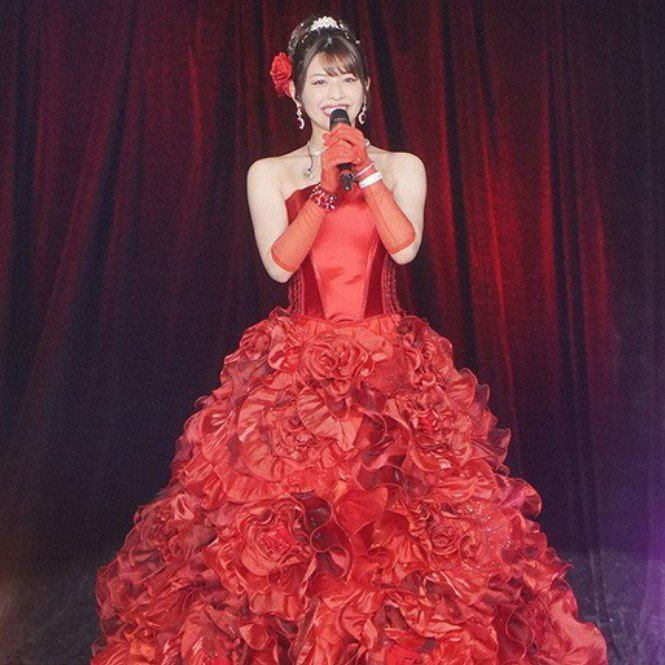

Tomoko Kanazawa anuncia
su retiro de la industria
del entretenimiento
17 de mayo de 2022
Yo, Kanazawa Tomoko, me retiraré de la industria
del entretenimiento el último día
de mayo. Me disculpo por sorprenderlos a
todos con este repentino anuncio.
Tags: #Tomoko #Retiro #JuiceJuice
Categoría: Juice=Juice | Comentarios: 851
Discurso de
graduación de
Tomoko Kanazawa
24 de noviembre de 2021
Yo era una chica normal de instituto a la que
le encantaba Hello! Project, que luego participó en
un concurso de karaoke porque quería un póster firmado.
Tags: #Tomoko #Graduación #JuiceJuice
Categoría: Juice=Juice | Comentarios: 352
Blogs de otros miembros:
- Akari Uemura
- Ruru Dambara
- Rei Inoue
- Yume Kudo
- Riai Matsunaga
- Ichika Arisawa
- Risa Irie
- Kisaki Ebata
- Sakura Ishiyama
- Akari Endo
Archivo de miembros retirados:
- Aina Otsuka
- Yuka Miyazaki
- Nanami Yanagawa
- Karin Miyamoto
- Sayuki Tagaki
- Tomoko Kanazawa
- Manaka Inaba